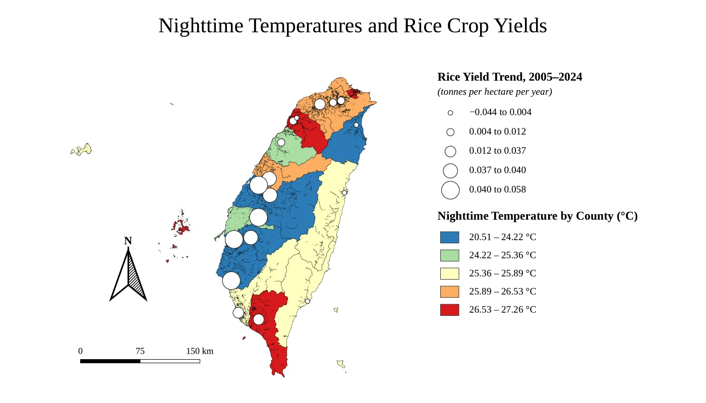
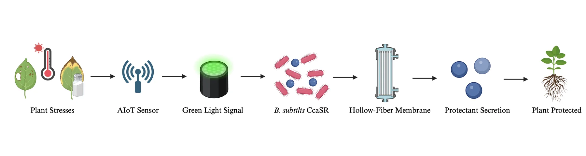
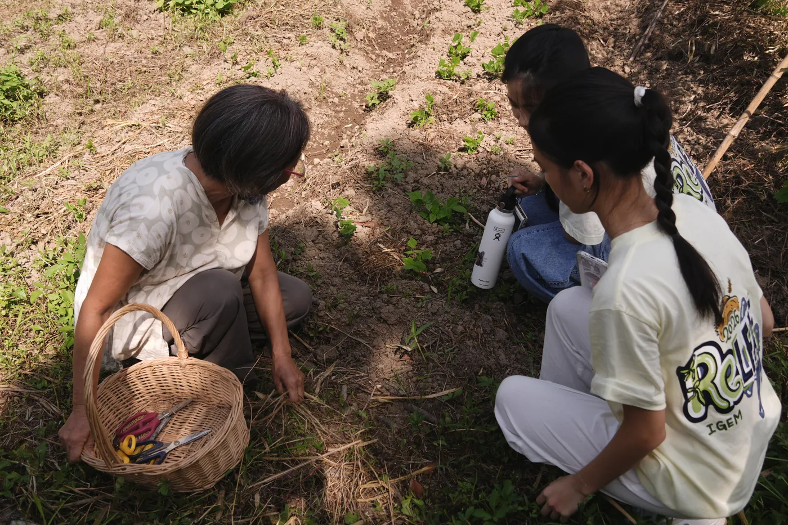
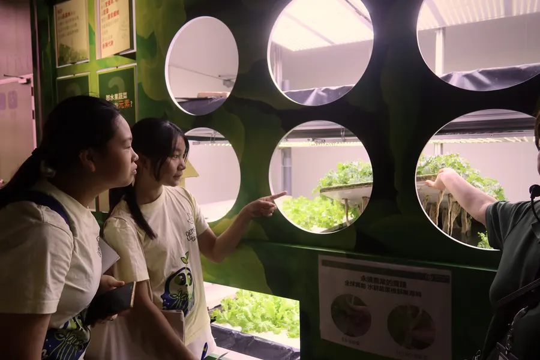

The challenge
Climate stress
Climate change is placing increasing pressure on agriculture. Rising temperatures, soil salinization, drought, and disease threaten crop productivity. To understand its effects, we mapped environmental and agricultural data across Taiwan.

Our analysis showed that warming, the size of a farm and the age of the person farming it vary considerably between regions. A farmer does not experience a national average; they experience the conditions of their own field. Taiwan is particularly exposed because more than 23 million people depend on only around 1.9 million acres of cultivable land, while typhoons, drought, and other climate-related disasters continue to threaten agricultural production.
Climate stress is local, so solutions must be able to respond locally.
Gaps in biological solutions
Biofertilizers, biostimulants, and bioprotectants offer promising alternatives to conventional agrochemicals, but they remain difficult to deliver affordably and reliably. These products are typically manufactured at centralized facilities, purified and formulated for stability, transported to farms, and stored under appropriate conditions. Each step adds time and cost, while farmers may still struggle to determine when the protectants should be applied.
Where it matters
Large commercial farms may have the financial resources, specialized equipment, and labor needed to manage these challenges. Small-scale farmers, however, often have less access to monitoring technologies, storage facilities, and precise application systems. As a result, the farmers most vulnerable to localized climate stress may also face the greatest barriers to accessing biological protection.
Taiwan’s agricultural sector also faces structural challenges including smallholder fragmentation, high technology costs, and an aging workforce. These factors can make the adoption of precision agriculture and other new technologies more difficult for smaller farms. In 2021, the average age of agricultural managers in Taiwan had reached 63.8 years, highlighting how important it is for new systems to be simple, accessible, and practical to operate.
For small-scale farmers, the question is therefore not only whether better technology exists, but whether it is affordable, accessible, and easy enough to use in everyday farming.
Project inspiration
Taiwan’s markets are an integral part of its culture, connecting the food people buy with the farmers who grow it. But behind the busy stalls and fresh produce is a growing problem: lettuce leaves are getting smaller, rice yields are decreasing, and harvests are becoming harder to protect. As climate change threatens to bring more extreme growing conditions, farmers are left trying to protect crops against stresses they cannot always see coming.
That was where ReLEAF began. We wanted to understand not only what was happening to crops, but what farmers could realistically do about it. Our project grew from a simple question: how can we give farmers a way to respond to plant stress before the damage becomes irreversible?
Our original design planned to release engineered bacteria into the soil to sense plant stress and produce protectants directly at the site of stress. Using a DesK–DesR system, temperature changes would activate a stress-response pathway, allowing the bacteria to respond biologically to changing conditions. However, consultations with professors and bioprocess experts revealed challenges with containing the engineered bacteria, as well as limitations in the precision and control of biological sensing. Their feedback inspired us to replace bacterial sensing with electronic sensors and an AIoT model that predicts plant stress. We also developed a hollow-fiber perfusion bioreactor that keeps the engineered bacteria contained while allowing the produced protectants to leave the system.
Our solution

First, a leaf sensor continuously monitors local crop conditions, including temperature and moisture. Our AIoT model combines these real-time measurements with weather forecasts and historical trends to predict plant stress and activate a green-light signal when conditions approach a damaging threshold. The data are displayed through an app interface, where farmers can view field conditions, receive stress alerts, and get maintenance reminders.
![A four-module diagram of the genetic circuit inside Bacillus subtilis. Module 1, PCB synthesis, turns heme into PCB with ho1::pcyA. Module 2, light sensing, is ccaS in the membrane, switched on by green light under stress and off by red light when there is none. Module 3, transcriptional output, is ccaR and the ccaR dimer. Module 4, output, shows translation and the folded protectant protein leaving the cell. Below, the ccaS/R circuit runs along the chromosome as four genes: ho1::pcyA, ccaS, ccaR and output.](../assets/img/description/synbio-modules.webp)
Then, green light activates the CcaSR optogenetic system in engineered Bacillus subtilis WB800, triggering the production of ACC deaminase. LEA14 and BoPEP4 were also constructed as parts for future integration into the same optogenetic system. Each one is aimed at a different mechanism: ACC deaminase at the ethylene a stressed plant makes, LEA14 at the damage drought and salt do to proteins, BoPEP4 at the plant’s own defenses. So far, our plant testing has focused on heat and salinity stress.

The engineered bacteria remain inside a hollow-fiber membrane bioreactor. The membrane allows the produced protectants to enter the delivery pathway while retaining the bacterial cells within the system. For routine maintenance, the hollow-fiber module is designed as a sealed, replaceable cartridge, similar to an ink cartridge, so it can be removed and inserted without directly handling the bacterial culture.
The protectants leave the machine in the permeate, which is designed to be delivered to plants through hydroponic circulation or soil irrigation.

In our current plant trials, however, the protectants were applied manually; connecting the bioreactor directly to growing crops remains a future step.
What leaves the system is the produced protein rather than the engineered bacteria themselves, supporting plant stress tolerance without intentionally releasing engineered cells into the environment. This allows ReLEAF to provide localized protection when stress is predicted, without releasing engineered bacteria into the environment.
Integrated Human Practice
Our project was continuously shaped by input from farmers, researchers, industry experts, and community members.

We visited local farms to understand how farmers recognize plant stress, manage their crops, and make decisions about intervention. Their feedback emphasized the need for a system that is automated, accessible, and compatible with existing farming practices.

We visited a hydroponic farm and consulted a plant-protectant company to better understand existing delivery systems and the barriers biological products face outside the laboratory. Their input helped us refine how ReLEAF could connect to hydroponic circulation, irrigation systems, and real agricultural workflows.

We then hosted a public forum that brought together farmers, company representatives, and community members to exchange perspectives and examine our bioreactor. These interactions helped us refine ReLEAF’s accessibility, safety, and real-world application.
Together, these conversations shaped how our project developed: farmers emphasized practical operation and affordability, while researchers and industry experts raised questions around biosafety validation, cartridge maintenance, regulation, and scale-up.
To learn more about how stakeholder feedback shaped the development of ReLEAF, visit our Integrated Human Practices page.
Our vision & future impact
Our vision
ReLEAF envisions a future in which every farmer can have access to a small, on-site biomanufacturing system. By generating protectants locally and on demand, our system could reduce farmers’ dependence on centralized manufacturing, long-distance transportation, and specialized storage. Ultimately, we hope ReLEAF can shorten the path between new biological discoveries and field application, empowering every farmer to produce the protection their crops need, when and where they need it.

Future impact
ReLEAF’s modular design could be adapted to produce other protein-based treatments and respond to a wider range of agricultural stresses. Future work will focus on testing protectant efficacy across different crops and growth stages, strengthening biosafety through cartridge-integrity testing, and improving the cartridge for easier maintenance and replacement.
Next, we hope to work with farmer collectives, research farms, and agricultural organizations to develop practical models for distribution, maintenance, and shared use. Partnerships with agricultural equipment rental organizations or government-supported subsidy programs could help lower adoption costs and make the system more accessible to small-scale farmers. With stronger field data, continued stakeholder feedback, and progress through the necessary regulatory requirements, ReLEAF could then move toward pilot-farm trials, commercialization, and broader deployment.
In the long term, ReLEAF aims to make precise biological protection safer, more responsive, and more accessible—especially for small-scale farmers who are often underserved by existing agricultural technologies.